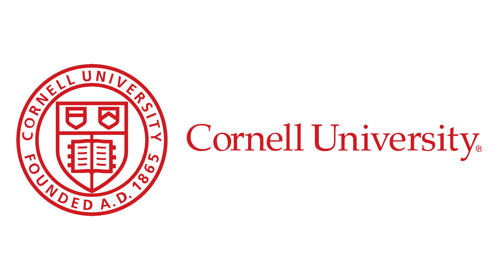
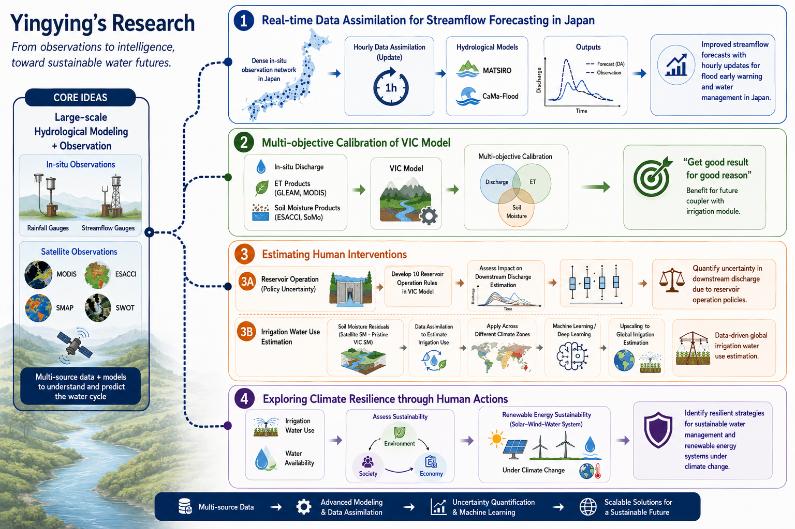

Hydrology · Flood Forecasting · Data Assimilation · Cornell University
水文学 · 洪水预报 · 数据同化 · 康奈尔大学
水文学 · 洪水予測 · データ同化 · コーネル大学

Yingying Liu is a Ph.D. student in Civil and Environmental Engineering at Cornell University. Her research focuses on human interventions in global hydrology (reservoir operation, irrigation, and industrial water use), large-scale hydrological modeling, and advanced techniques for flood forecasting — including data assimilation (DA) and AI/deep learning approaches. She develops an open-source, real-time data assimilation module for a global hydrological model to enhance flood forecasting accuracy, with significant potential for application in Japan's early warning systems. Currently, she is working on the development of a reservoir module for the VIC model and VIC calibration.
柳莹莹是康奈尔大学土木与环境工程系的博士研究生。她的研究聚焦于人类活动对全球水文的影响 （包括水库调度、灌溉及工业用水）、大尺度水文模拟，以及洪水预报先进方法——涵盖数据同化（DA） 与人工智能/深度学习技术。她正在开发一个面向全球水文模型的开源实时数据同化模块，以提升洪水 预报精度，并有望在日本早期预警系统中得到应用。目前，她还致力于VIC模型水库模块的开发与参数 率定工作。
劉莹莹（柳莹莹）は、コーネル大学土木環境工学科の博士課程学生です。研究は、グローバル水文学 における人間の介入（ダム操作・灌漑・工業用水）、大規模水文モデリング、および洪水予測の先進 技術（データ同化・AI/深層学習）に焦点を当てています。グローバル水文モデル向けのオープンソース リアルタイムデータ同化モジュールを開発し、洪水予測精度の向上と日本の早期警報システムへの応用 が期待されています。現在は、VICモデルへの貯水池モジュールの開発とキャリブレーションにも取り 組んでいます。
